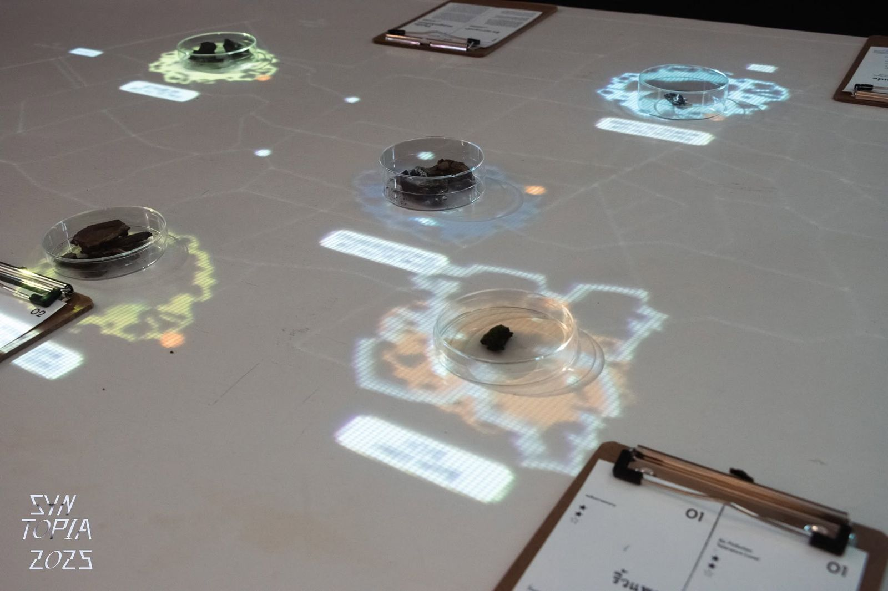
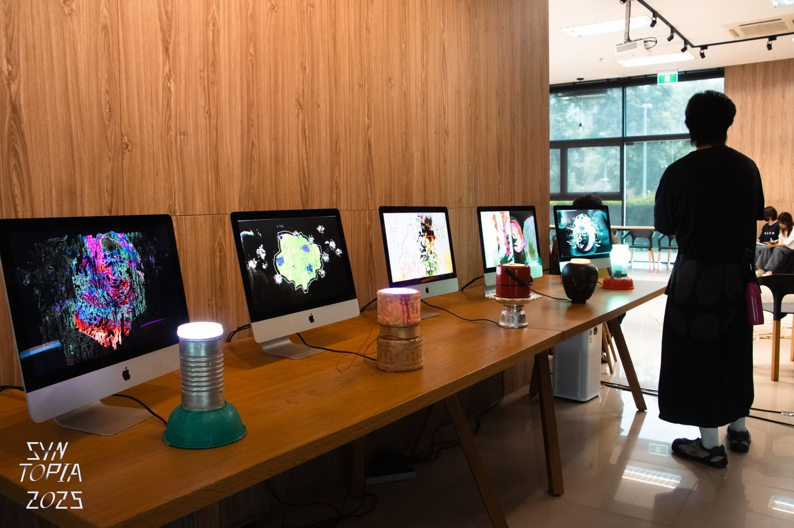

Museum of Tomorrow: Prototyping Futures, Rooted in Memory was a programme at Syntopia Symposium 2025, Chiang Mai, in which Media Art and Design students of Chiang Mai University imagined the future of Chiang Mai through bioart, critical making and site-responsive design. Grounded in frugal futurism, it moved through studio work, a hack camp, field trips and lab visits, and closed with an exhibition built as a conversation. Made with tomorrow.lab and Jirapat Thaweechuen.
